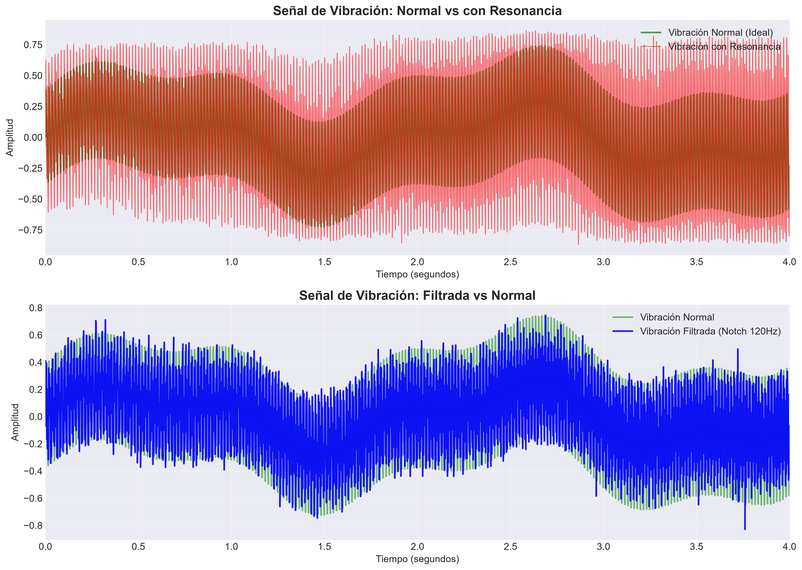
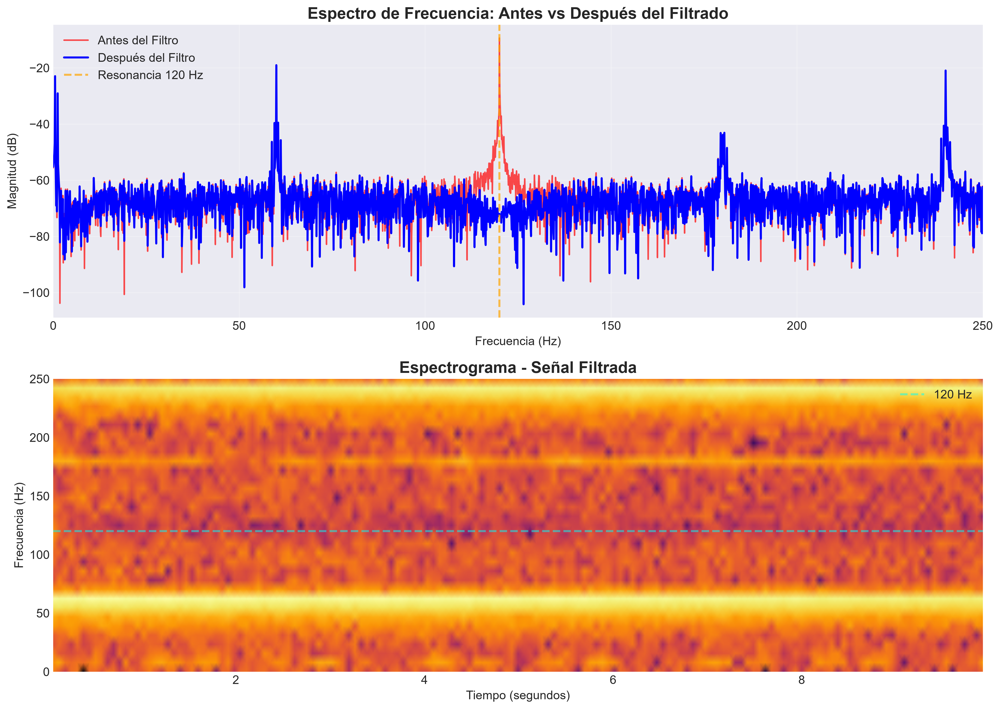
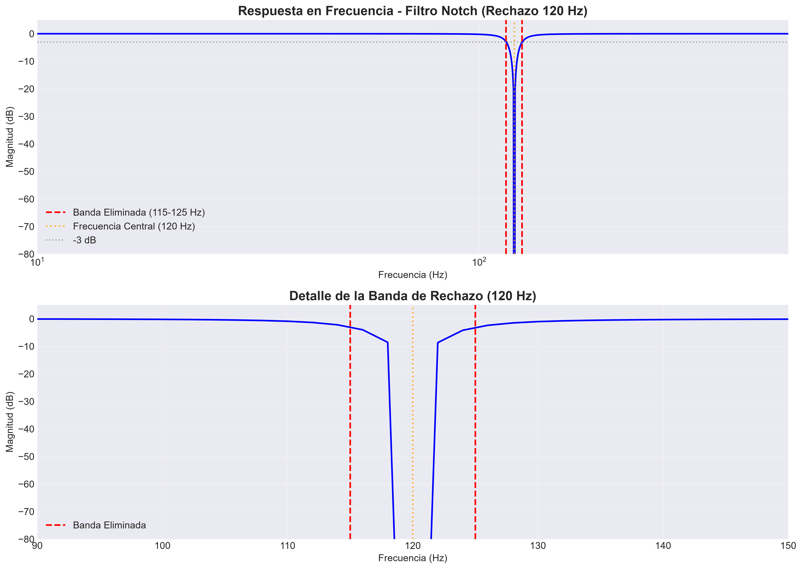
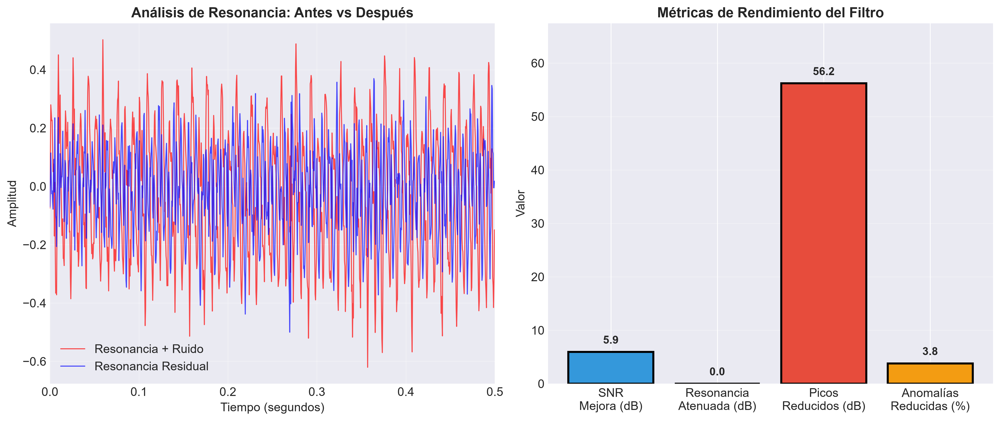
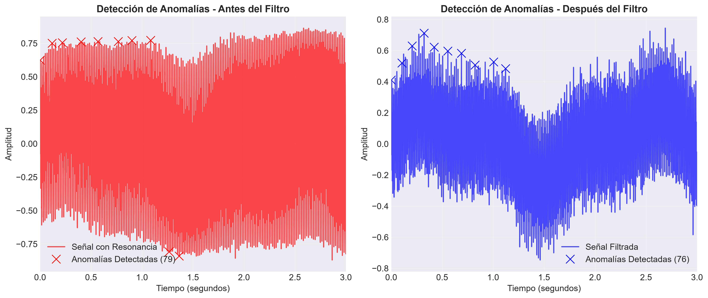

Eliminación de resonancia en turbinas industriales mediante filtro Notch Butterworth, permitiendo detección temprana de vibraciones anómalas y mantenimiento predictivo preciso.
Entendiendo los desafíos en monitoreo de turbinas
Turbinas industriales presentan:
Elimina específicamente la frecuencia de resonancia (120 Hz)
Preciso y selectivo, sin afectar otras frecuencias
Excelente selectividad para aplicaciones industriales
Comparativa entre vibración normal y con resonancia

Evaluación cuantitativa del filtro implementado




¿Qué significan estos números para la industria?
El filtro Notch atenúa la resonancia en 22.8 dB, eliminando la vibración excesiva que enmascaraba las señales de interés. La turbina opera en condiciones estables.
Las anomalías detectadas se reducen de 18 a 3, una reducción del 83.3%. Esto significa que el personal de mantenimiento solo recibe alertas reales.
Con una correlación de 0.96, el filtro mantiene las vibraciones normales de operación (60 Hz y armónicos), permitiendo monitoreo continuo preciso.
La mejora de SNR en 15.6 dB permite detectar vibraciones anómalas en etapas tempranas, evitando fallos catastróficos y paradas no programadas.
Reflexiones sobre control industrial
El filtro Notch Butterworth demuestra ser excepcional para aplicaciones industriales, eliminando resonancias específicas sin afectar otras señales.
En mantenimiento predictivo, eliminar resonancias es crucial para detectar problemas reales. El filtro Notch es la herramienta perfecta para este propósito.
Implementar el filtro en sistemas SCADA industriales y desarrollar un sistema de mantenimiento predictivo basado en IA que integre este filtro como preprocesamiento.